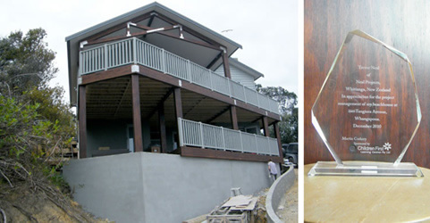
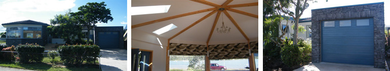

Project Supervision
The combination of my practical building experience with my design abilities enabled a constructive relationship with the builders & subtrades on these projects.

Corkery - Whangapoua

I supervised the building of this holiday home for a Brisbane client over the course of 16 months. Weekly reports & photos of the progress were sent to the client via email. Close liaison with the owner, builder & subtrades enabled a few minor design changes both internal & external to be carried out. My brief was to ensure all work was to council approval though to final signoff.
At the end of this project, the client presented a gift in recognition (pictured above). It reads: "Trevor Neal, of Neal Projects, Whitianga New Zealand In appreciation for the project management of my beachhouse at Whangapoua. December 2010"
Langford - Whitianga
This project is a holiday home for a couple living in England. The design was finalised while they were in NZ early 2010 Drawings were then completed, council consents & builders quotes sought. Decisions on a myriad of items in the building process, such as choice of stone, colours, carpet, lino & light fittings was done via emails. Weekly reports & photos of the progress continued thoughout the construction stage. Ensuring all work done to council approval though to final completion.